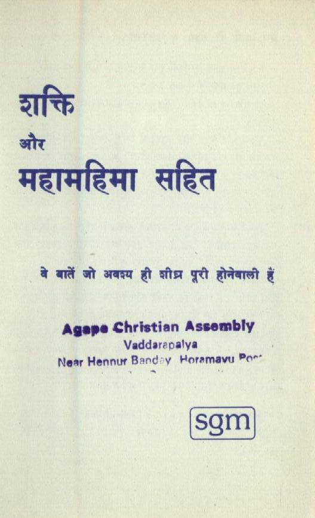
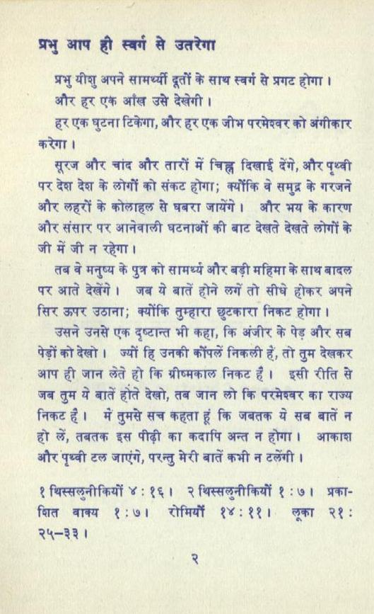
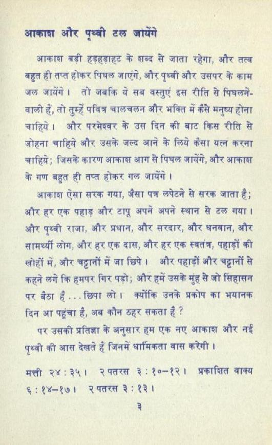
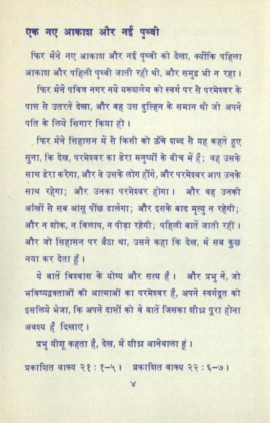
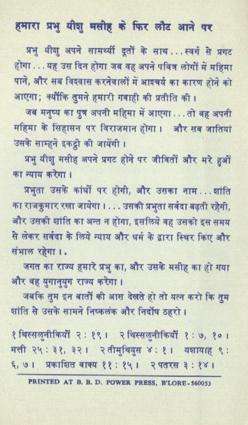
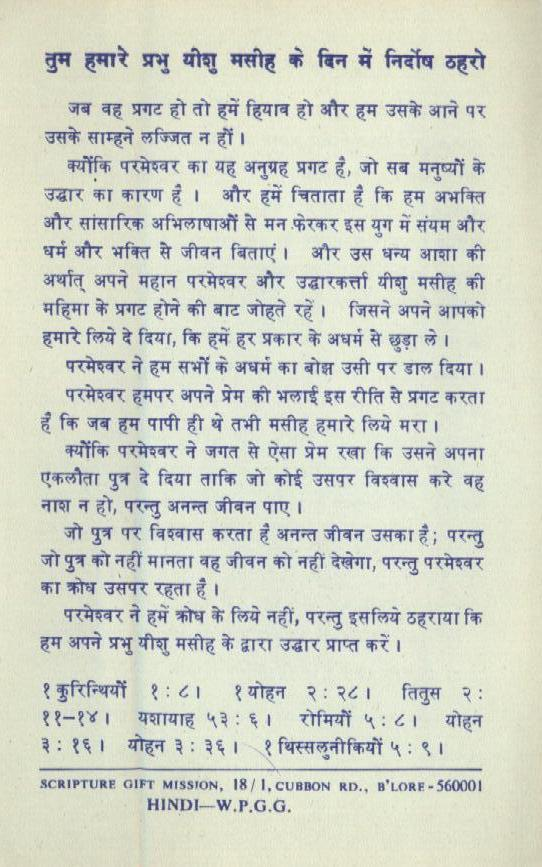

5. शक्ति और महामहिमा सहित
Hindi gospel tract · 6 pages · tap a page to enlarge












Text of this pamphlet
वे बातें जो अवश्य gt site पूरी होनेबालो हूँ
Agape Christian Assembly Near Hennur Band-y Horamavu Por
प्रभु आप हो स्वर्ग से उतरेगा
प्रभु यीशु अपने सामर्थ्यी दूतों के साथ स्व से प्रगट होगा ।
हर एक घुटना टिकेगा, और हर एक जीभ परमेश्वर को अंगीकार
सूरज और चांद और तारों में चिह्न दिखाई देंगे, और पृथ्वी पर देझ्ष देश के लोगों को संकट होगा; क्योंकि वे समुद्र के गरजने और लहरों के कोलाहल से घबरा जायेंगे। और भय के कारण और संसार पर आनेवाली घटनाओं की बाट देखते देखते लोगों के जी में जी न रहेगा।
तब बे मनुष्य के पुत्र को सामर्थ्य और बड़ी महिमा के साथ बादल पर आते देखेंगे । जब ये बातें होने छगें तो सीधे होकर अपने सिर ऊपर उठाना; क्योंकि तुम्हारा छुटकारा निकट होगा।
उसने उनसे एक दुष्टान्त भी कहा, कि अंजीर के पेड़ और सब पेड़ों को देखो । ज्यों हि उनकी कॉंपलें निकली हें, तों तुम देखकर आप ही जान लेते हो कि ग्रीष्मकाल निकट हूँ । इसी रीति से जब तुम ये बातें होते देखो, तब जान लो कि परमेश्वर का राज्य निकट है। में तुमसे सच कहता हूं कि जबतक ये सब बातें न हो लें, तबतक इस पीढ़ी का कदापि अन्त न होगा। आकाश और पृथ्वी टल जाएंगे, परन्तु मेरी बातें कभी न टलेंगी ।
१ थिस्सलुनीकियों ४: १६। २ थिस्सलुनीकियों १:७। प्रका- दित वाक्य १:७। रोमियाँ १४:११। लूका २१:
आकाश बड़ी हड़हडाहट के शब्द से जाता रहेगा, और तत्व बहुत ही तप्त होकर पिघल जाएंगे, और पृथ्वी और उसपर के काम जल जायेंगे। तो जबकि ये सब वस्तुएं इस रीति से पिघलने- वालो हैं, तो तुम्हें पवित्र चालचलन और afar a कैसे मनुष्य होना चाहिये। और परमेश्वर के उस दिन की बाट किस रीति से जोहना चाहिये और उसके जल्द आने के लिये Far यत्न करना चाहिये; जिसके कारण आकाश आग से पिघल जायेंगे, और आकाश के गण बहुत ही तप्त होकर गल जायेंगे।
आकाश ऐसा सरक गया, जैसा पत्र लपेटने से सरक जाता है; और हर एक पहाड़ और टापू अपने अपने स्थान से टल गया। और पृथ्वी राजा, और प्रधान, और सरदार, और धनवान, और सामर्थ्यी लोग, और हर एक दास, और हर एक स्वतंत्र, पहाड़ों की खोहों में, और चट्टानों में जा छिपे । और पहाड़ों और चट्टानों से कहने लगे कि हमपर गिर पड़ों; और हमें उसके मुंह से जो सिहासन पर बैठा हूँ... छिपा छो। क्योंकि उनके प्रकोप का भयानक दिन आ पहुंचा है, अब कौन ठहर सकता है ?
पर उसकी प्रतिज्ञा के अनुसार हम एक नए आकाश और नई पृथ्वी की आस देखते हें जिनमें धार्मिकता वास करेगी।
मत्ती २४:३५। २पतरस ३: १०-१२। प्रकाशित वाक्य ६: १४-१७। २पतरस ३: १३।
फिर मेंने नए आकाश और नई पृथ्वी को देखा, क्योंकि पहिला
आकाश और पहिली पृथ्वी जाती रही थी, और समुद्र भी न रहा ।
फिर मैंने पवित्र नगर नये यरूद्ललेम को स्वर्ग पर से परमेश्वर के पास से उतरते देखा, और वह उस दुल्हिन के समान थी जो अपने पति के लिये सिंगार किया हो ।
. फिर मेंने सिंहासन में से किसी को ऊँचे शब्द से यह कहते हुए सुना, कि देख, परमेश्वर का डेरा मनुष्यों के बीच में है; वह उसके साथ डेरा करेगा, और वे उसके लोग होंगे, और परमेश्वर आप उनके साथ रहेगा; और उत्तका परमेश्वर होगा। और वह उनकी आँखों से सब आंसू पोंछ डालेगा; और इसके बाद मृत्यु न रहेगी; और न शोक, न विलाप, न पीड़ा रहेगी; पहिली बातें जाती रहीं । और जो सिंहासन पर बैठा था, उसने कहा कि देख, में सब कुछ नया कर देता हूँ ।
ये बातें विदवास के योग्य और सत्य है। और प्रभु ने, जो भविष्यद्वक्ताओं की आत्माओं का परमेश्वर है, अपने स्वर्गदूत को इसलिये भेजा, कि अपने दासों को वे बातें जिसका शीघ्र पूरा होना अवध्य हैं दिखाएं।
प्रभु यीशू कहता है, देख, में शीघ्र आनेवाला हूं ।
प्रकाशित वाक्य २१: १-५। प्रकाहित वाक्य २२: ६-७।
हमारा प्रभु ay मसीह के फिर छौट आने पर
प्रभु यीशु अपने सामर्थ्यी दूतों के साथ .. . स्वर्ग से प्रगट होगा . . . यह उस दिन होगा जब वह अपने पवित्र लोगों में महिमा पाने, और सब विश्वास करनेवालों में आइचर्य का कारण होने को आएगा; क्योंकि तुमने हमारी गवाही की प्रतीति की ।
जब मनुष्य का पुत्र अपनी महिमा में आएगा . . . तो वह अपनी महिमा के सिंहासन पर विराजमान होगा। और सब जातियां उसके साम्हने eet की जायेंगी।
प्रभु यीशु मसीह अपने प्रगट होने पर जीवितों और मरे हुओं का न्याय करेगा।
प्रभुता उसके कांधों पर होगी, और उसका नाम. .. शांति का राजकुमार रखा जायेगा । . . . उसकी प्रभुता सवंदा बढ़ती रहेगी, और उसकी शांति का अन्त न होगा, इसलिये वह उसको इस समय से छेकर सबंदा के लिये न्याय और धर्म के द्वारा स्थिर किए और संभाल war.
जगत का राज्य हमारे प्रभु का, और उसके मसीह का हो गया और वह युगानुयुग राज्य करेगा।
जबकि तुम इन बातों की आस देखते हो तो यत्न करो कि तुम शांति से उसके सामने निष्कलंक और निर्दोष ठहरो।
१ थिस्सलुनीकियों २: १९। 3 थिस्सलुनीकियों १: ७, १०। weft २५: ३१, ३२। २तीमुथियुस ४: १। यश्षायाह ९: ६, ७। प्रकाशित वाक्य ११: १५। २पतरस ३: १४।
तुम हमारे प्रभु योशु मसीह के बिन में निर्दोष ठहरो
जब वह प्रगट हो तो हमें हियाव हो और हम उसके आने पर उसके साम्हने लज्जित न हों ।
क्योंकि परमेश्वर का यह अनुग्रह प्रगट है, जो सब मनुष्यों के उद्धार का कारण है । और हमें चिताता है कि हम अभक्ति और सांसारिक अभिलाषाओं से मन फेरकर इस युग में संयम और धर्म और भक्ति से जीवन बिताएं। और उस धन्य ora की अर्थात् अपने महान परमेश्वर और उद्धारकर्त्ता यीशु मसीह की महिमा के प्रगट होने की बाट जोहते रहें। जिसने अपने आपको हमारे लिये दे दिया, कि हमें हर प्रकार के अधर्म से छुड़ा ले ।
परमेश्वर ने हम सभों के अधर्म का बोझ उसी पर डाल feat
परमेश्वर हमपर अपने प्रेम की भलाई इस रीति से प्रगट करता हैँ कि जब हम पापी ही थे तभी मसीह हमारे लिये मरा ।
क्योंकि परमेश्वर ने जगत से ऐसा प्रेम रखा कि उसने अपना एकलौता पुत्र दे दिया ताकि जो कोई उसपर विश्वास करे वह नाक्ष न हों, परन्तु अनन्त जीवन पाए।
जो पुत्र पर विश्वास करता है अनन्त जीवन उसका है; परन्तु जो पुत्र को नहीं मानता वह जीवन को नहीं देखेगा, परन्तु परमेश्वर का क्रोध उसपर रहता है ।
परमेश्वर ने हमें क्रोध के लिये नहीं, परन्तु इसलिये ठहराया कि हम अपने प्रभु यीशु मसीह के द्वारा उद्धार प्राप्त करें।
१कुरिन्थियों १:८। श्योहन २:२८। तितुस २: ११-१४। यश्ञायाह ५३:६। रोमियों ५:८। योहन ३: १६। ग्रोहन ३:३६। 8 बिस्सलुनीकियों ५: ९।
SCRIPTURE GIFT MISSION, I8/I,CUBBON RD., B'LORE-56000I
Text extracted automatically from the scanned pamphlet; please refer to the page images for the exact wording.